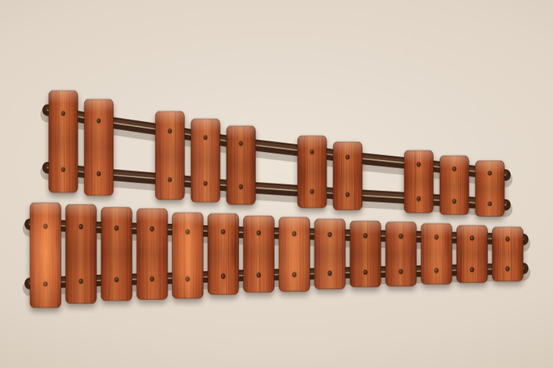
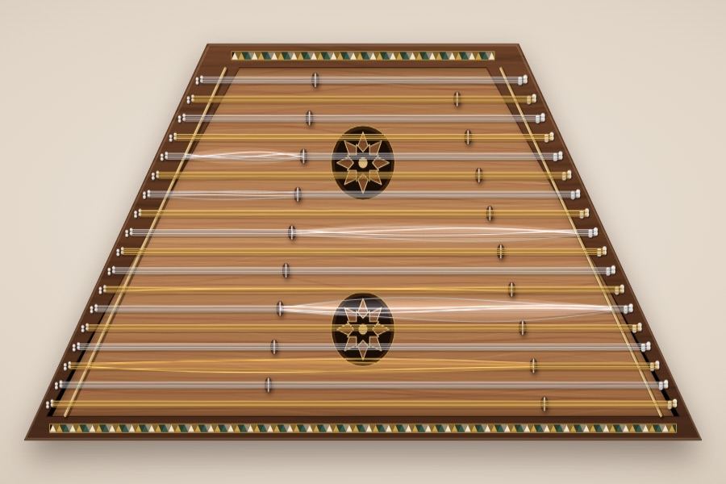
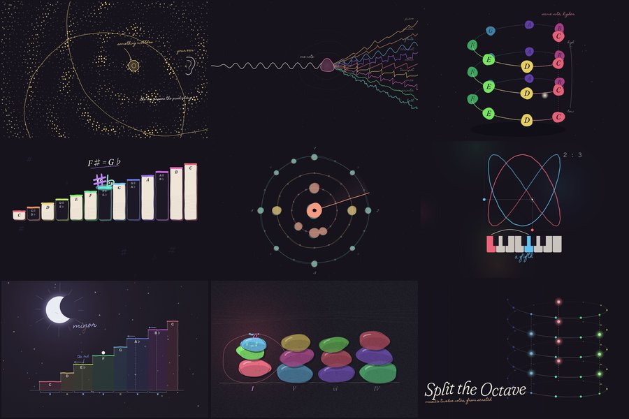

Some are instruments you can actually play: tap them, roll on them, use as many fingers as you like. Some are lessons that start at square one and build up how music works, with sound at every step. Everything runs live in your browser, with the sound made as you play rather than from recordings.
It's a sister site to VisualStims, for looking at brain science, NeuroSims, for learning how it works, and Haptastic, for toys to touch. SoundBites is for your ears.
Instruments
a Rosewood
b Santoor
Lessons
1 Split the Octave